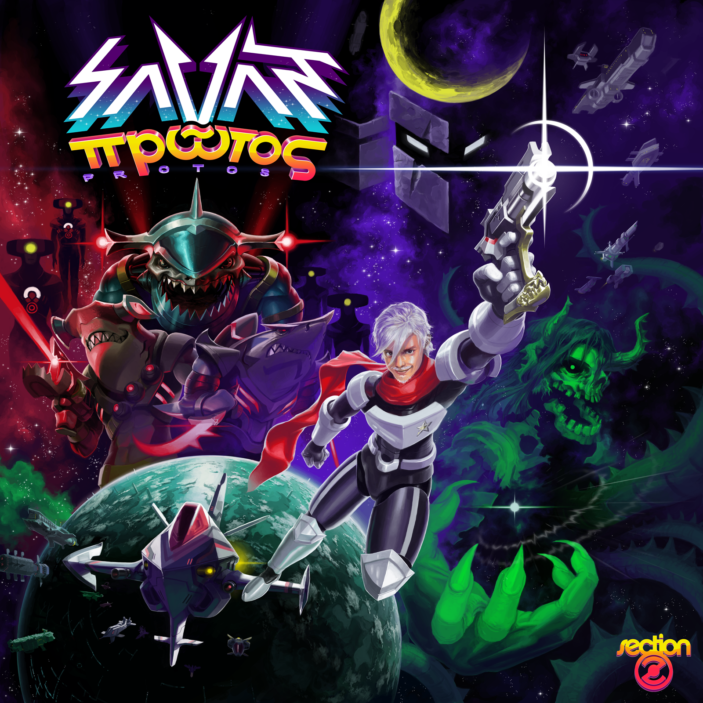
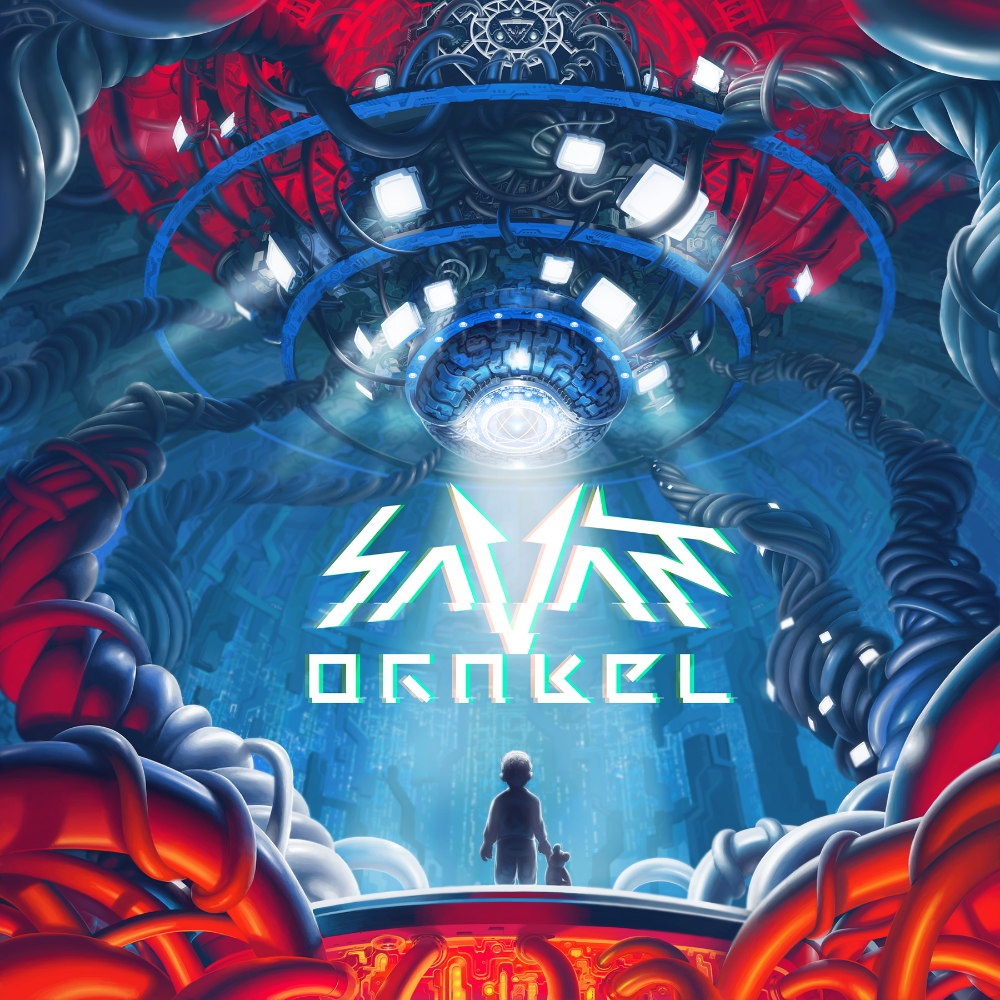
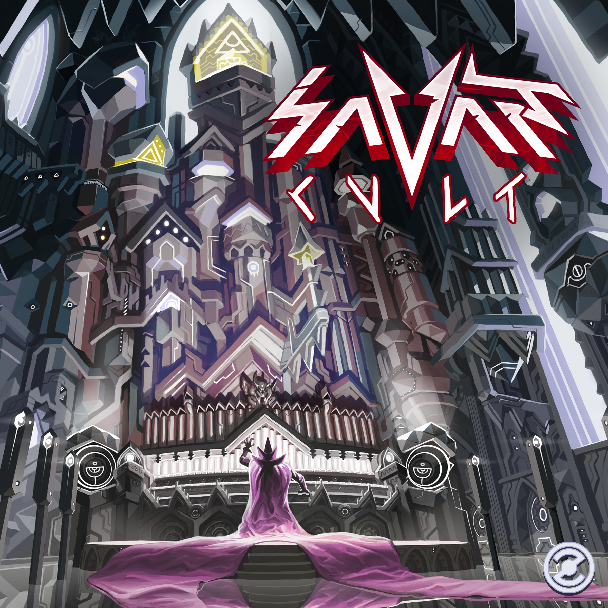
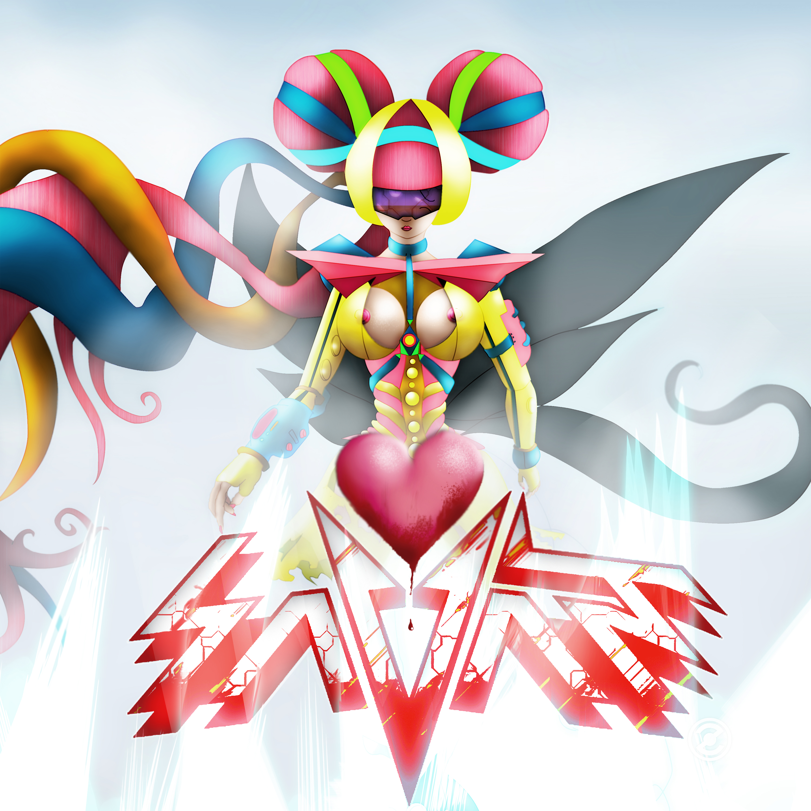
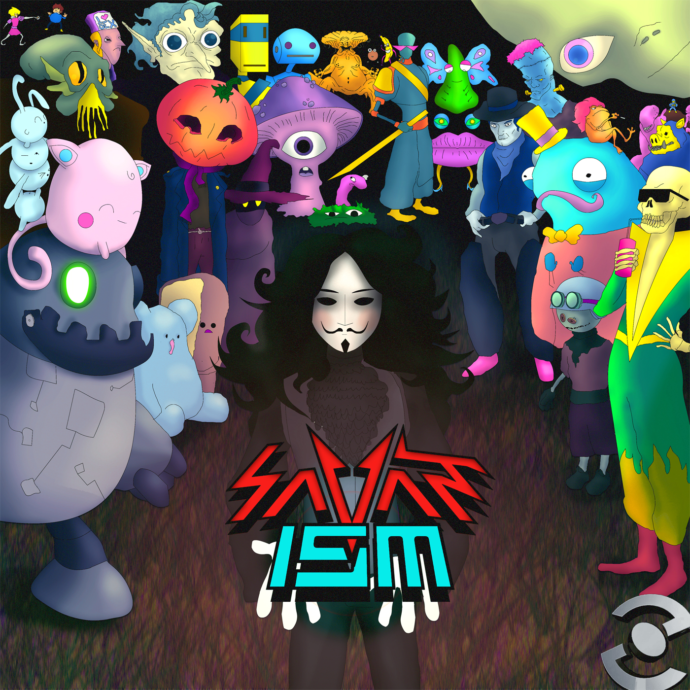
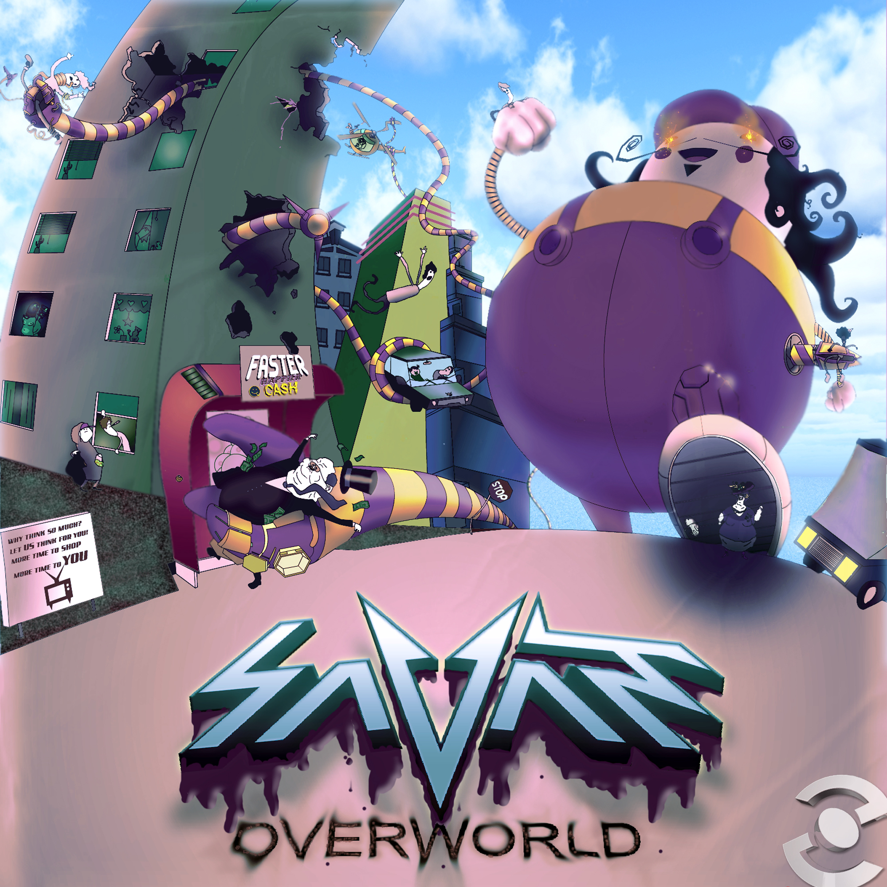
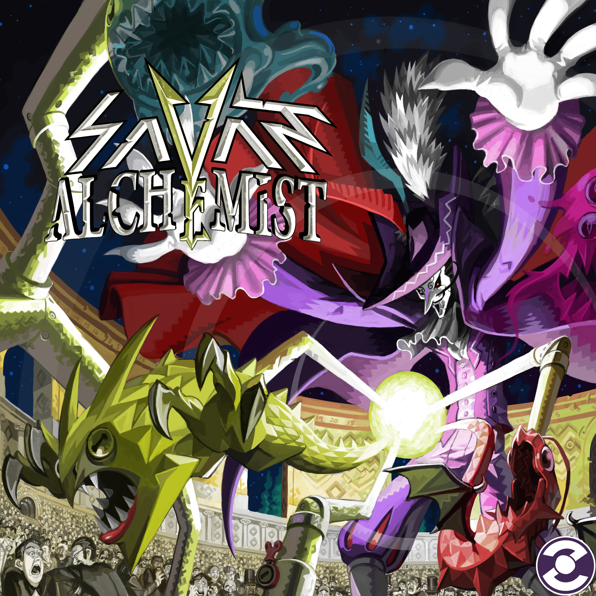
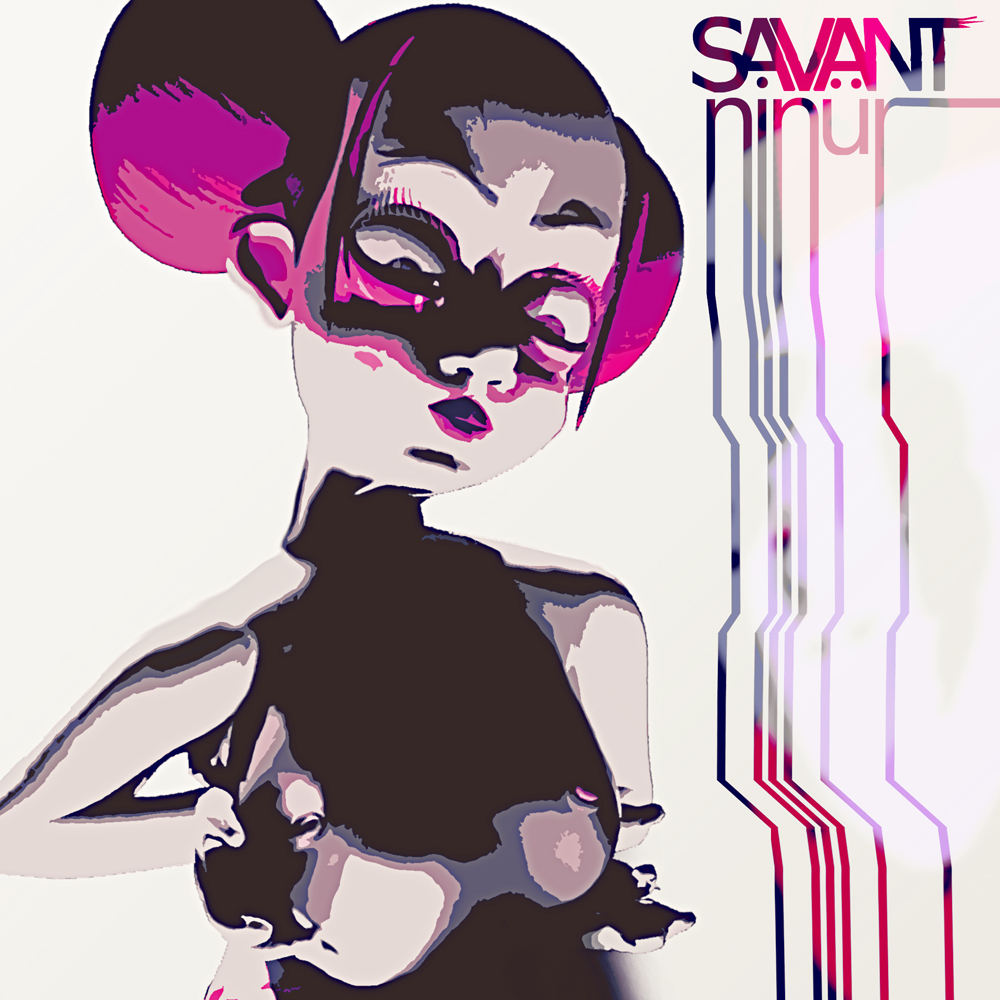

πρῶτος (Protos)Man Of The Law 04:40Prototype 04:14Spaceship 03:33Rider In Red 02:07Fakers 03:22Rise Up 03:57Nebula 05:58Spaceheart 04:37Laser Sharks 04:03Cry For Love 03:40Samurai 03:38Quest 06:48Venom 05:09
OrakelOrakel 02:01Spacewolfe 05:54Origin 05:55Sawchain 04:00How I Roll 04:30Penguins 05:15Valley of Shadows 03:41Awakening Wonders 00:56Prophecy 03:53Organismical 04:03Snake Eyes 03:07Rave Life 06:09Legacy 03:55Valkyrie 04:14Stargate 05:49Red Claw 04:47Reggaetron 02:47
CultRobin Hood 05:03Night Owl 03:13Kali 47 05:18Forbidden (Feat. Kaster) 08:39Patriots 04:28West Coast 03:39Can't Touch This 03:05Virgin 03:02Chop It (Feat. Gino Sydal) 04:19Butterfly 04:04
♥ (heart)Step Up Your Game (Original Mix) 07:34Wild Ganja (Original Mix) 04:45♥ (heart) 08:08Siren feat. Ninür (Original Mix) 03:40Heartbreakers (original Mix) 06:39
1SmPrelude 06:26The Beat 04:05Nightmare Adventures 03:29Ghetto Blastah 03:45Syko (feat Twistex) 05:05Starfish 05:01Zeitgeist 04:238-bit Lightsaber 04:26Mystery 05:08Outfox 05:34No Shit Sherlock 03:43Cry For Love 05:10Ism 05:25
OverworldOverworld 03:54Bad Baws 03:43Megaboy 02:54Starscream Forever (feat Qwentalis) 07:00Quantum Mechanics 04:13Arcade Night Cruise 03:35Ride Like the Wind 04:49Dirty Mary 03:45Diamond Blush 05:22Flashbach 04:00Eggs 05:58Destroy the Dragon 03:32
VarioSplinter 04:57Vario 03:20Living iPod 04:39Mecha Blecka 04:35Shadow feat. Qwentalis 06:48Stormtrooper 04:19Hero From The Past 03:28Antipixel 03:10Ba-Da Bing! 05:05Party Machine 05:39Champagne 06:21Heart-Shaped Mushroom Cloud 03:39Burgertime (Savant Theme) 03:03Trust Issues 04:20Fuck Nexus 05:50Thunderclout 05:47
AlchemistMother Earth 05:14Sky Is The Limit (feat Donny Goines) 05:20Sledgehammer 03:53Alchemist (feat Gino Sydal) 04:36Dancer In The Dark 05:10Hungry Eyes (feat Qwentalis) 04:19Sustainer 09:00Witchcraft 03:23Redemption 05:02Konami Kode (feat. Donny Goines) 03:45Melody Circus 03:26Fat Cat Shuffle 03:59Bananonymous 06:11The Horror 04:42Manslaughter (feat Svanur Papparazzi) 05:26Paradisco 03:59Black Magic 03:45
NinurYou Can Play 04:09Bach To The Phuture 01:53Ocarine 03:47Ninur 04:46The Third Eye 04:01Gunslinger Jones 06:10I Want You 03:37Rabbit Whore feat. Blood Command 05:29Rollercoaster 04:05Holy Ghost 03:51Make You Dream 04:03The A Team 04:53Omni feat. Vinter In Hollywood 07:37